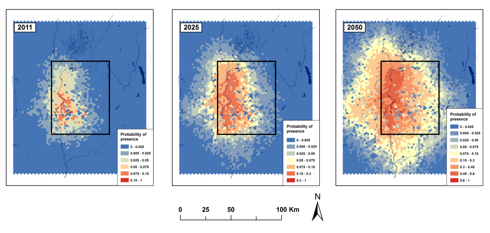

- Human-mediated dispersal acts as a vector for many exotic species, both at the introduction and secondary spread stages. Primary and secondary introductions arise from human-mediated long distance dispersal happening at global scales. Secondary spread occurs at smaller spatial and time scales (e.g. landscape) and results from either natural or human-mediated dispersal. Despite the importance of materials transportation (e.g. landscaping, construction) for the spread of invasive species, few studies have investigated short distance human-mediated dispersal and even less have tried to model it.
- We developed MoRIS (Model of Routes of Invasive Spread), a spatially explicit spread model designed to simulate invasive species dispersal by transport at local to regional spatial scales. MoRIS is an innovative, yet simple model, taking into account the road network topology to influence the direction of dispersal events. MoRIS is designed to minimize a priori making (e.g., expert knowledge), to enable the estimation of human-mediated dispersal parameters based on a simple presence/absence locations dataset and to produce predictive maps of spread.
- By focusing on human transportation activities and network topology, MoRIS provides a flexible and objective approach widely generalizable to any taxa dispersed by human activities using road network. Besides constituting a useful tool for managers, MoRIS aims to fill a gap in the modeling of human-mediated dispersal and to bring new practical and conceptual insights in its study.
Access to MoRIS code: HERE